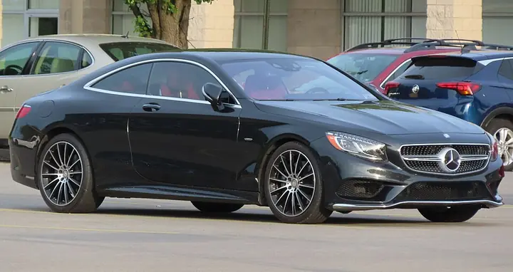
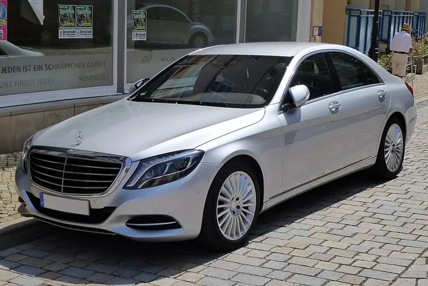
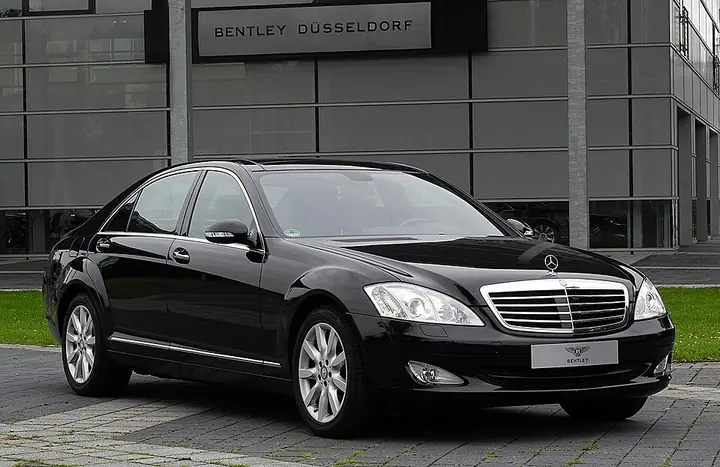
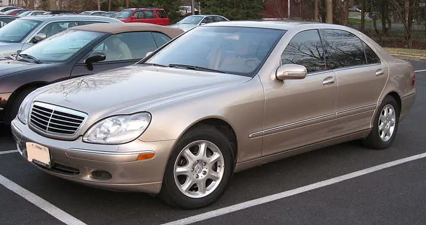
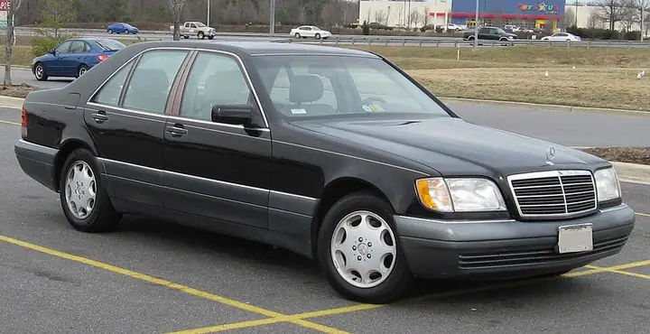
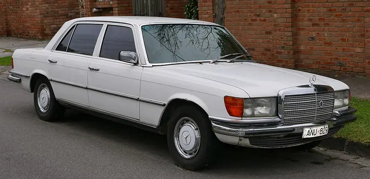

Mercedes-Benz S-Class
Seventh generation (W223; 2020) · 2020–present
Abstract
This generation of the Mercedes-Benz S-Class is a full-size luxury car (F), built September 2020–present in Germany: Sindelfingen, India: Pune (MBI), Indonesia: Bogor (MBI) and other plants. Body styles: 4-door saloon. Layout: Front-engine, rear-wheel-drive or all-wheel-drive (4MATIC). Designed by Balázs Filczer.


1Specifications
| Production | September 2020–present |
|---|---|
| Model years | 2021–present |
| Assembly | Germany: SindelfingenIndia: Pune (MBI)Indonesia: Bogor (MBI)Malaysia: Pekan (HICOM)Thailand: Samut Prakan (TAAP) |
| Designer | Balázs Filczer |
| Class | Full-size luxury car (F) |
| Body style | 4-door saloon |
| Layout | Front-engine, rear-wheel-drive or all-wheel-drive (4MATIC) |
| Platform | Mercedes-Benz MRA Large |
| Engine | Petrol:2.5 L M256 turbo I6 (China)3.0 L M256 turbo I64.0 L M176 twin-turbo V86.0 L M279 twin-turbo V12Petrol plug-in hybrid:3.0 L M256 turbo I64.0 L M176 twin-turbo V84.0 L M177 twin-turbo V8Diesel:2.9 L OM656 turbo I6 |
| Electric motor | 48 V electrical system (EQ Boost)Schaeffler PSM P2 Hybrid Module High Voltage gearbox-mounted electric motor (PHEV)140 kW synchronous electric motor (63 S E Performance) |
| Transmission | 9-speed 9G-Tronic/9G-Tronic plug-in-hybrid automatic |
| Battery | Up to 29 kWh high-voltage lithium ion |
| Electric range | 100 km |
| Wheelbase | 3106 mm (W223)3216 mm (V223)3396 mm (Z223) |
| Length | 5179 mm (W223)5289 mm (V223)5460 mm (Z223) |
| Width | 1954 mm |
| Height | 1503 mm |
| Weight | 1995–2350 kg |
| Related | Mercedes-Benz C-Class (W206) |
| Predecessor | Mercedes-Benz S-Class (W222) |
2Driver assistance
- DRIVE PILOT (SAE Level 3, optional, W223): Conditionally automated driving on German motorways: the car drives itself up to 95 km/h in normal traffic flow behind a vehicle ahead in the right lane, and the driver may look away. Uses lidar besides cameras and radar; turquoise lights show other road users that the system is active. Source: Mercedes-Benz Group: DRIVE PILOT, 95 km/h.
3Versions
- Mercedes-Benz
- Mercedes-Benz S 680 Guard 4MATIC
- Mercedes-Maybach
- Mercedes-Maybach S 580 e
- Mercedes-Maybach S 680 "Edition 100"
- Mercedes-Maybach S 680 Haute Voiture
- Mercedes-Maybach S-Klasse "Maybach by Virgil Abloh" S 680
- Mercedes-AMG
- S 63 E Performance
- W223 facelift (2026)
4Previous generations





_%E2%80%93_Frontansicht_(1),_30._August_2011,_D%C3%BCsseldorf.jpg){kind=link}





_sedan_(2010-04-03)_02.jpg){kind=link}

_sedan_(2015-07-09)_01.jpg){kind=link}
5Generation by generation
Length +3% from the first to the last
W220 19985,038 mm
W221 20055,076 mm
W222 20135,146 mm
Mercedes-Benz S-Class (C217) 20145,027 mm
W223 20205,179 mm
Weight +13% from the first to the last
W220 19981,770 kg
W221 20051,955 kg
W222 20131,910 kg
W223 20201,995 kg